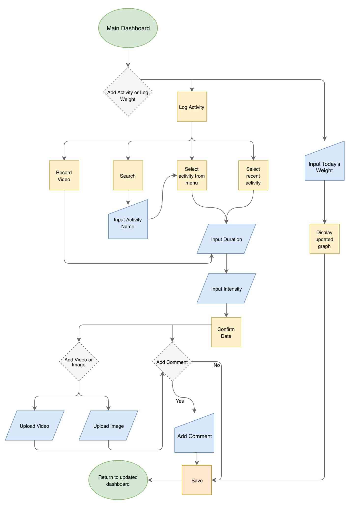
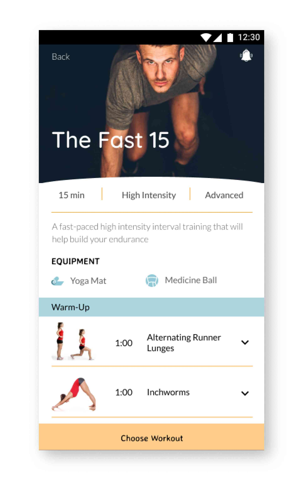

In support of the research, BURPI focused on providing the following:

Design Roles
- UX Design
- Visual Design
- Brand & Identity
Design Deliverables
- User Surveys
- Personas
- Competitive Analysis
- Concept & identity
- User Stories
- User Flows
- Prototype
- A/B and Usability Testing
- Visual Design
Specifications
Duration
- 3 months
Tools & Software
- Adobe Illsutrator
- Figma
- InVision
- Draw.io
- Usability Hub
- Maze
Competitive Analysis


Fitness Options
Across all three platforms, the focus was on allowing users to individualize their overall fitness routine by providing them with a library of different exercises and routines. Nike and ActiveX provided a much more varied library of potential routines, while SWORKIT randomized exercises to fit into a specific time frame.
Community-Building
Nike’s focus on community was mainly through a scoreboard. While this sense of competition can be compelling for more advanced fitness participants, it can be act as a deterrent for beginners. ActiveX provided users with the ability to join packs as part of their platform, but users did not have the ability to choose members within the pack.
User Research
To understand what users expect and desire from their fitness application, I conducted a survey that was posted through various online platforms, including social media and fitness forums. By doing so, I received responses from a variety of sources: individuals with a fitness background and those with little experience. However, more than 50% of applicants had used or currently use some sort of fitness application.
The biggest challenge participants commonly identified regarding achieving their fitness goals is losing motivation and lacking accountability. This is partially a result of the individualistic nature of most fitness applications- the lack of community and support means there is no accountability which can then cause individuals to lose motivation.
Whose Support Keeps You Motivated?
While many may assume those with fitness goals would like the support of their family or a personal trainer, most participants (47%) in the survey surprisingly indicated that they would rather receive support from someone with similar fitness goals.
It is important to also note however, that while participants indicated they craved a sense of community, they also overwhelmingly preferred to work out alone.
What Features Do You Like Most?
User Personas
To give greater context to the results of the survey, I conducted three one-on-one interviews with participants:
Jennifer
22 | College Graduate
Motivation
Track daily activities
Uninterested in tracking food
Frustration
Too difficult to use or track workouts
Have to do the math myself

Emeka
26 | Human Resources
Motivation
Suffers from heart condition
Simple fitness routine I can stick to
Frustration
Extra features seemed unnecessary
Having so many options is distracting

Carrie
31 | IT Recruiter
Motivation
Feel better mentally and physically
Add variety to workouts
Frustration
No way to visually track progress
Jennifer
22 | College Graduate
Motivation
Track daily activities
Uninterested in tracking food
Frustration
Too difficult to use or track workouts
Have to do the math myself
Emeka
26 | Human Resources
Motivation
Suffers from heart condition
Simple fitness routine I can stick to
Frustration
Extra features seemed unnecessary
Having so many options is distracting
Carrie
31 | IT Recruiter
Motivation
Feel better mentally and physically
Add variety to workouts
Frustration
No way to track progress
User Flows
Add Friend
Log Workout
Wireframes
Onboarding

Workout Plan


User Profile


Testing
Two sets of usabilty tests were conducted, one with high-fidelity wireframes and the other with high-fidelity mockups. In my first series of user tests, I created a maze to determine the app’s ease-of-use and to quickly identify any problems in the information architecture early on.
Onboarding
Participants indicated that they would prefer to see a sample of their customized fitness plan before committing to creating an account.
Navigation
The bottom navigation went through several iterations to provide greater clarity.


Nomenclature
Based on user feedback, the distinction between activities and workouts was removed and the new design allows users to select basic activities (e.g., running, sports, biking) and workouts from the same screen.

Burpi provides users with the freedom to change the day's planned workout and also the ability to edit a given workout. User testing results showed that the "Change" selection under the day's workout was causing confusion with these two distinct options. Intended for users to switch the workout to a different activity, I determined that "replace" would better inform users which action the demand coincided.

Branding

Quicksand
Lato
Concerning typography, simple typefaces are used in Burpi for legibility and to maintain a modern, clean interface.
#FFAE3F
#69BACD
#000000
#F4F4F4
#7BD195
#ABE2C7
Orange and blue were chosen as the main colors for the app. Blue creates feelings of trust, and orange continues to give the app the energetic visual design created in the logo. With its’ association to health, encouragement, and happiness, orange is used as a highlight throughout the app. Black provides contrast to create interest and a balance in the color scheme. For supporting colors, green was chosen given its association with renewal and growth.
Final Design
The day's workout is featured clearly. Option to replace with different activity or skip the day.

In a given workout, users can customize exercises. Information about workout routine is provided visibly.
The Feed dashboard provides community and user interaction to keep users motivated and engaged.
When browsing, suggested workouts, friends' workouts, and workout categories provided.
Final Thoughts
Creating this fitness app was a very exciting process. I think the most important lesson I learned was that even well-recognized and universal designs have their problems. From the placement of reminders to the use of plus icons, the translation to Burpi was not always seamless. This once again raised the importance of testing for me.
One of the main faults of my initial research phase was that I did not get an opportunity to interview individuals unaccustomed to fitness apps for my personas, though they participated in the survey. This created a gap for me in building an app that would be accessible to both experienced and inexperienced users. As such, more issues came up during usability testing; I had participants who completed tasks effortlessly while others were very confused by terminology and the organization of information. But despite these issues, creating Burpi further developed my understanding of contemporary design trends and how to critically analyze research and testing results to create reasonable solutions.